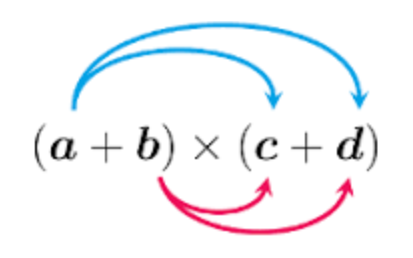

Calcul algébrique
Somme de termes et produit de facteurs
Exemple
Somme de terme : La dernière opération est une somme (ou une différence)
- $x-3$
- $(x+4)-(6-x)$
- $1+(x+1)(x-1)$
- $x^2+2x+10$
Exemple
Produit de facteur : La dernière opération est un produit (ou un quotient)
- $3x(5-x)$
- $(x+4)(6-x)$
- $(x-1)^2$
- $9\times\dfrac{4x-1}{1-x}$
Valeurs interdites
Ce sont les valeurs de $x$ pour lesquelles il n’est pas possible de calculer l’expression alg√©brique.
Exemple
Soit $f(x)=\dfrac{1-x}{x-4}$
Si $x=4$ alors $(x-4)=0$ et il n’est pas possible de calculer $f(4)$ (division par z√©ro).
Exemple
Soit $f(x)=\sqrt{x}$
Si $x\le 0$ alors $\sqrt{x}$ n’est pas d√©fini et il n’est pas possible de calculer $f(x)$
Pour $f(x)$, $x$ est un nombre réel positif.
Développer / Factoriser

Definition
- D√©velopper : c’est transformer un produit en somme
- Factoriser : c’est transformer une somme en produit
Exemple
- D√©velopper : $\qquad 3($üòÑ$+$üìñ$)\quad=\quad 3$üòÑ$+3$üìñ
- Factoriser : $\qquad 3$üòÑ$+3$üìñ$\quad=\quad 3($üòÑ$+$üìñ$)$
Methode
Développer une expression algébrique
- $\cbox{lightblue}2(3-x)=\cbox{lightblue}2\times 3 + \cbox{lightblue}2\times (-x)=6-2x$
- $\cbox{lightgreen}{4x}(3x-y)=\cbox{lightgreen}{4x}\times 3x + \cbox{lightgreen}{4x}\times (-y)=12x^2-4xy$
- $\cbox{pink}{-}(x-y)=\cbox{pink}{(-1)}\times x + \cbox{pink}{(-1)}\times (-y)=-x+y=y-x$
- $\cbox{yellow}{x}(3-a+3b)=\cbox{yellow}{x}\times 3 + \cbox{yellow}{x}\times (-a)+\cbox{yellow}{x}\times 3b=3x-ax+3xb$
Prop
Double distributivité
$$(\cbox{lightblue}{a}+\cbox{lightgreen}{b})(\cbox{pink}{c}+\cbox{yellow}{d})=\cbox{lightblue}{a}\cbox{pink}{c}+\cbox{lightblue}{a}\cbox{yellow}{d}+\cbox{lightgreen}{b}\cbox{pink}{c}+\cbox{lightgreen}{b}\cbox{yellow}{d}$$

Methode
Utiliser la double distributivité
$$ \begin{aligned} (x+3)(y-1) & =(x\times y)+(-1\times x)+(3\times y)+\Big(3\times (-1)\Big) \\ ~ & =xy-x+3y-3 \end{aligned} $$
Exemple
$$ \begin{aligned} A=(x+5)(x-2)&=(x\times x)+(-2\times x)+(5\times x)+\Big(5\times (-2)\Big)\\ ~&=x^2-2x+5x-10\\ ~&=x^2+3x-10\ \end{aligned} $$
$$ \begin{aligned} B=(3-x)(3+x) & =(3\times 3)+(3\times x)+(-x\times 3)+(-x\times x) \\ ~ & =9+3x-3x+x^2 \\ ~ & =x^2+9 \ \end{aligned} $$
Exemple
$$ \begin{aligned} (4x+5)(x-1)-2(x+1) & =(4x\times x)+(4x\times -1)+(5\times x)+(5\times -1)+\ldots \\ ~ & \qquad\ldots(-2\times x)+(-2\times 1) \\ ~ & =4x^2-4x+5x-5-2x-2 \\ ~ & =4x^2-x-7 \end{aligned} $$
Methode
Factoriser une expression
Pour factoriser une expression, il faut faire apparaître un facteur commun.
Exemple
$$ \begin{array}{cc} \begin{aligned} 4x-2y & =\boxed{2}\times 2x-\boxed{2}\times y \\ ~ & =\boxed{2}\times(2x-y) \\ ~ & =2(2x-y) \\ \end{aligned} \qquad & \qquad \begin{aligned} 6x^2-5x & =\boxed{x}\times 6x-\boxed{x}\times 5 \\ ~ & =\boxed{x}\times(6x-5) \\ ~ & =x(6x-5) \\ \end{aligned} & \end{array} $$
$$ \begin{aligned} 110a+11 & =\boxed{11}\times 10a+\boxed{11}\times 1 \\ ~ & =\boxed{11}\times(10a+1) \\ ~ & =11(10a+1) \\ \end{aligned} $$
Exemple
$$ \begin{aligned} 3(2+3x)-(5+2x)(2+3x) & =\boxed{(2+3x)}\times 3-\boxed{(2+3x)}\times (5+2x) \\ ~ & =\boxed{(2+3x)}\times\Big(3-(5+2x)\Big) \\ ~ & =(2+3x)\times\Big(3-5-2x)\Big) \\ ~ & =(2+3x)(-2-2x) \\ ~ & =-(2+3x)(2+2x) \\ \end{aligned} $$
Exemple
$$ \begin{aligned} (2-5x)^2-(2-5x)(1+x) & =\boxed{(2-5x)}\times (2-5x)-\boxed{(2-5x)}\times (1+x) \\ ~ & =\boxed{(2-5x)}\times\Big((2-5x)-(1+x)\Big) \\ ~ & =(2-5x)(2-5x-1-x) \\ ~ & =(2-5x)(1-6x) \\ \end{aligned} $$
Rem
Lorsque le facteur commun n’est pas imm√©diatement apparent, il est parfois possible de modifier l’√©criture d’un des termes de l’expression pour faire appara√Ætre un facteur commun.
Exemple
$$ \begin{array}{rl} 4(1-x)^2-3x(x-1) & =4(1-x)(1-x)\cbox{lightgray}{{+}}3x(\cbox{lightgray}{1-x}) \\ ~ & =\boxed{(1-x)}\times 4(1-x)+\boxed{(1-x)}\times (3x) \\ ~ & =\boxed{(1-x)}\Big( 4(1-x)+ (3x)\Big) \\ ~ & =(1-x)(4-4x+ 3x) \\ ~ & =(1-x)(4-x) \\ \end{array} $$
Identités remarquables
Propriété : Identités remarquables❤️
Prop
Pour tout $a$ et $b\in\R$, on a :
- $\boxed{(a+b)^{2} = a^{2} + 2ab +b^{2}}$
- $\boxed{(a-b)^{2} = a^{2} - 2ab +b^{2}}$
- $\boxed{(a+b)(a-b) = a^{2} - b^{2}}$

Exemple
$$ \begin{aligned} 23^2 = (20+3)^2 & = 20^2 + 2\times 20\times 3+3^2 \\ ~ & =400+120+9 \\ ~ & =529 \end{aligned} $$
Graphiquement, $23^2 = 529$
Methode
Utiliser les identités remarquables pour développer
Exemple
$\begin{aligned}A=(x-5)^2 &=x^2 -2\times x\times 5+5^2 \\&=x^2 -10x+25\end{aligned}$
$\begin{aligned}B=\left(6+\frac{1}{2}x\right)^2 &=6^2 +2\times 6\times \frac{1}{2}x+\left(\frac{1}{2}x\right)^2 \\&=36+6x+\frac{1}{4}x^2 \end{aligned}$
$\begin{aligned}C=(2x-1)(2x+1)&=(2x)^2 -1^2 \\&=4x^2 -1\end{aligned}$
$\begin{aligned}D=-2(1-x)^2 &=-2(1^2 -2x+x^2 )\\&=-2+4x-2x^2 \end{aligned}$
$\begin{aligned}E=2(x+3)-(2x+3)(2x-3)&=2x+6-\left((2x)^2 -3^2 \right)\\&=2x+6-4x^2 +9\\&=-4x^2 +2x+15\end{aligned}$
Methode
Utiliser les identités remarquables pour factoriser
Il faut faire apparaître les termes $a^2$, $b^2$ et $2ab$.
Exemple
$$ \begin{aligned} x^2-4x+4 & =\cbox{pink}x^2-2\times \cbox{pink}x\times \cbox{lightblue}2+\cbox{lightblue}2^2 \\ ~ & =\cbox{pink}a^2-2\times \cbox{pink}a\times \cbox{lightblue}b+\cbox{lightblue}b^2 \\ ~ & =(\cbox{pink}a-\cbox{lightblue}b)^2 \\ ~ & =(x-2)^2 \\ \end{aligned} $$
Exemple
$$ \begin{aligned} A = 25+x^2+10x & =\textcolor{red}{x}^2+2\times \textcolor{red}{x}\times \textcolor{blue!70}{5}+\textcolor{blue!70}{5}^2 \\ ~ & =\textcolor{red}{a}^2+2\times \textcolor{red}{a}\times \textcolor{blue!70}{b}+\textcolor{blue!70}{b}^2 \\ ~ & =(a+b)^2 \\ ~ & =(x+5)^2 \\ \end{aligned} $$
$$ \begin{aligned} B = 1-36x^2 & =1^2 -(6x)^2 \\ ~ & =a^2 -b^2 \\ ~ & =(a+b)(a-b)) \\ ~ & =(1-6x)(1+6x) \\ \end{aligned} $$
Exemple
$$ \begin{aligned} C = (2-x)^2 -64 & =(2-x)^2 -8^2 \\ ~ & =a^2 -b^2 \\ ~ & =(a+b)(a-b) \\ ~ & =((2-x)+8)((2-x)-8) \\ ~ & =(10-x)(-6-x) \\ ~ & =-(10-x)(6+x) \\ ~ & =(x+10)(x+6) \\ \end{aligned} $$
Réduire au même dénominateur
Déf : Réduire au même dénominateur
Definition
R√©duire au m√™me d√©nominateur c’est transformer une somme (ou une diff√©rence) de deux fractions en une seule fraction.
Prop
Pour tout nombre $a$, $b$, $c$ et $d$, réels on a :
$$\frac{a}{b}+\frac{c}{d}=\frac{ad+bc}{bd}$$
Rem
Un dénominateur commun = Produit des dénominateurs
Exemple
$$ \begin{aligned} \frac{2}{5}+\frac{1}{3} & =\left(\frac{2}{5}\times\boxed{\frac{3}{3}}\right) & + & \left(\frac{1}{3}\times\boxed{\frac{5}{5}}\right) \\ ~ & =\left(\frac{6}{15}\right) & + & \left(\frac{5}{15}\right) & =\frac{11}{15} \end{aligned} $$
Demo
$$ \begin{alignedat}{5}\frac{a}{b}+\frac{c}{d} & =\pa{\frac{a}{b}\times\boxed{\frac{d}{d}}} & + & \pa{\frac{c}{d}\times\boxed{\frac{b}{b}}} \\ ~ & =\pa{\frac{ad}{bd}} & + & \pa{\frac{bc}{bd}} & =\frac{ad+bc}{bd} \end{alignedat} $$
Exemple
$\begin{alignedat}{5} A=\left(\frac{2}{x}\right)-\left(\frac{x+1}{2}\right)&=\left(\frac{2}{x}\times\boxed{\frac{2}{2}}\right)&-&\left(\frac{x+1}{2}\times\boxed{\frac{x}{x}}\right)\\ ~&=\left(\frac{4}{2x}\right)&-&\left(\frac{(x+1)x}{2x}\right)\\ ~&=\left(\frac{4}{2x}\right)&-&\left(\frac{x2+x}{2x}\right)&=\frac{-x2-x+4}{2x} \end{alignedat}$
Exemple
$\begin{alignedat}{5} B=2-\left(\frac{5x}{x-2}\right)&=\left(\frac{2}{1}\times\boxed{\frac{x-2}{x-2}}\right)&-&\left(\frac{5x}{x-2}\times\boxed{\frac{1}{1}}\right)\\ ~&=\left(\frac{2(x-2)}{x-2}\right)&-&\left(\frac{5x}{x-2}\right)\\ ~&=\frac{2x-4-5x}{x-2}&~&=\frac{-3x-4}{x-2}&=\frac{3x+4}{2-x} \end{alignedat}$
Exemple
$\begin{alignedat}{5} C=\left(\frac{3x}{1-x}\right)+\left(\frac{5}{2x-3}\right)&=\left(\frac{3x\color{blue}(2x-3)}{(1-x)\color{blue}(2x-3)}\right)&+&\left(\frac{5\color{red}(1-x)}{(2x-3)\color{red}(1-x)}\right)\\ ~&=\frac{6x^2-9x}{(1-x)(2x-3)}&+&\frac{5-5x}{(1-x)(2x-3)}\\ ~&=\frac{6x^2-14x+5}{(1-x)(2x-3)} \end{alignedat}$